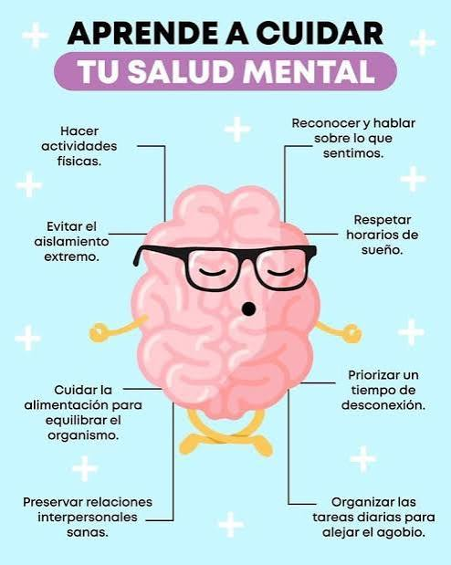
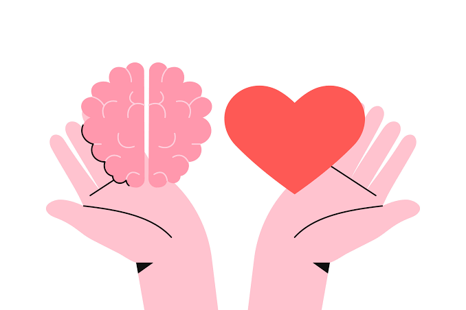

La salud mental es un estado de bienestar mental que permite a las personas hacer frente a los momentos de estrés de
la vida, desarrollar todo su potencial, aprender y trabajar adecuadamente y contribuir a su comunidad. Tiene un valor
intrínseco e instrumental y es un derecho humano fundamental.
La salud mental se da en un proceso continuo complejo, que cada persona experimenta de una manera diferente. En un
momento dado, un conjunto diverso de factores individuales, familiares, comunitarios y estructurales pueden combinarse para
proteger la salud mental o socavarla. Aunque la mayoría de las personas son resilientes, las que están expuestas a
circunstancias adversas corren un mayor riesgo de tener una afección de salud mental.
Las afecciones de salud mental comprenden los trastornos mentales y las discapacidades psicosociales, así como otros
estados mentales asociados a un alto grado de angustia, discapacidad funcional o riesgo de conducta autolesiva. Muchas
afecciones de salud mental pueden tratarse con eficacia a un costo relativamente bajo, aunque los sistemas de salud siguen teniendo
considerables limitaciones de recursos y en todo el mundo se registran importantes brechas terapéuticas.
Los riesgos y factores de protección que influyen en la salud mental actúan en múltiples niveles.
Hay factores individuales, como las habilidades emocionales, el uso indebido de sustancias y la genética, que pueden incrementar
la vulnerabilidad a los problemas de salud mental.
Los factores sociales y ambientales –como la pobreza, la violencia, la desigualdad y la degradación del medio ambiente– también aumentan
el riesgo de sufrir afecciones de salud mental.
Las iniciativas de promoción y prevención tienen por objeto mejorar la salud mental abordando los determinantes individuales, sociales y
estructurales de la salud mental. Las intervenciones pueden concebirse para personas, grupos específicos o toda la població

Las iniciativas nacionales para fortalecer la salud mental deben centrarse no solo en promover el bienestar mental de todas las personas, sino también
en atender las necesidades de las personas con afecciones de salud.
La mejor forma de conseguir este objetivo es prestando atención comunitaria de salud mental, que es más accesible y aceptable que la atención institucional,
ayuda a prevenir violaciones de derechos humanos y ofrece mejores resultados en la recuperación. Dicha atención debería proporcionarse a través de una red de
servicios coordinados que comprendan:
Dado el enorme déficit de atención de las afecciones habituales de salud mental, como la depresión y la ansiedad, los países deben también explorar
formas innovadoras de diversificar y ampliar la atención. Entre ellas se incluyen intervenciones psicológicas no especializadas y herramientas digitales
de autoayuda, que se pueden ampliar a escala de forma eficiente y asequible.
